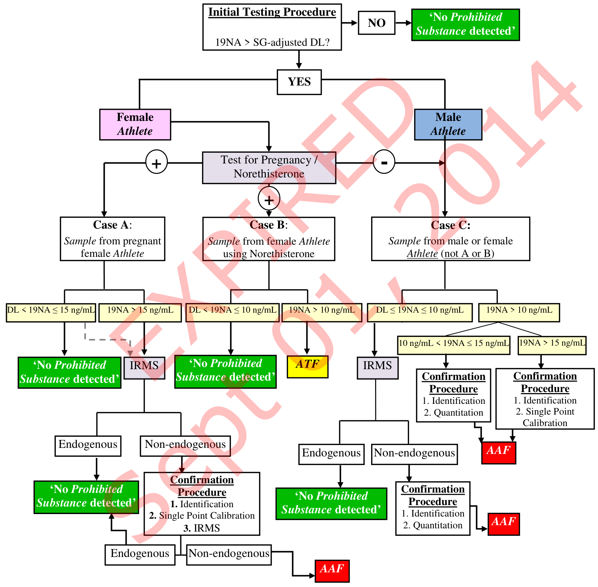

Technical Documents · TD2012NA
Edition v1.0, 2012 (version 1.0) · effective 1 January 2012 · superseded
Retrieved on 25 November 2026 from https://www.wada-ama.org/sites/default/files/resources/files/WADA_TD2012NA_Final_EN.pdf
Editions: v1.1, 2027 (current) · v2.0, 2021 · v1.0, 2021 · v1.0, 2019 · v1.0, 2017 · v1.0, 2016 · v1.0, 2015 · v1.0, 2014 · v1.0, 2012 · v1.0, 2010 · v1.0, 2010 · v1.0, 2004
p. 1
HARMONIZATION OF ANALYSIS AND REPORTING OF 19-NORSTEROIDS RELATED TO NANDROLONE
1.0 Introduction
This document has been established to harmonize the analysis and reporting of
19-norsteroids related to nandrolone by Laboratories.
- Each batch of Samples analyzed by GC/C/IRMS shall include a negative control urine (δ¹³C values of 19-NA and endogenous reference compound - ERC - in a natural range) and a positive control urine (difference in δ¹³C values (∆δ) between ERC and 19-NA greater than 3 ‰). These controls shall be subjected to the same sample preparation procedure as the Sample test Aliquot. The analysis shall include the confirmation of the 19-NA peak identity
The detection of the use of nandrolone and other 19-norsteroids is based primarily upon the identification of the main urinary metabolite, 19-norandrosterone (19-NA) in a concentration (derived from hydrolysis with β-glucuronidase) greater than the Decision Limit (DL), as established in the DL Technical Document. More than one metabolite [e.g., 19-noretiocholanolone (19-NE)] of administered norsteroids may be detected and reported but the identification and quantification and the demonstration, when required, that the 19-NA metabolite does not come from endogenous origin is sufficient to report an Adverse Analytical Finding (AAF).
Under specific circumstances, as described below, additional testing and reporting may be required.
2.0 Analysis
2.1 Identification and Quantification
In addition to meeting the identification criteria described in the IDCR Technical Document, the Laboratory shall demonstrate that the concentration of 19-NA is above the DL as set out in the DL Technical Document and, when necessary, that the 19-NA detected is not of endogenous origin (through GC/C/IRMS analysis).
The quantification method used to calculate the concentration of 19-NA shall include the following characteristics: · A deuterated internal standard (e.g., d₄-19-NA-glucuronide); · A calibration curve at an appropriate range bracketing the estimated concentration of the analyte in the Sample (when the concentration is below 15 ng/mL) or a single calibration point at 15 ng/mL (when the concentration is at or above 15 ng/mL); · The use of appropriate negative and positive quality control samples.
The GC/C/IRMS method shall include the following characteristics:
p. 2
(for example by GC/MS analysis performed under comparable chromatographic conditions. The purpose is to produce a chromatogram with similar peak profiles so that the spectra can be used to identify the peak(s) of interest. Minor differences in RT between the two techniques are expected).
2.2 Additional mandatory tests
²In cases of pregnancy, when the concentration of 19-NA measured in a urine Sample is between the DL and 15 ng/mL, the IRMS analysis may also be performed to ascertain the endogenous origin of 19-NA.
19-NA is excreted at low concentrations as a minor metabolite of norethisterone, a progestogen agent of permitted use, and during pregnancy. In addition, 19-NA can be rarely produced in urine samples, at similar levels, by in-situ 19-demethylation of androsterone (A).
When the measured concentration of 19-NA exceeds the DL in the urine Sample of a female Athlete, the Laboratory shall perform methods to test for pregnancy (e.g. based on the quantification of urinary human Chorionic Gonadotrophin (hCG)) and for the use of norethisterone-based contraceptives (e.g. detection of tetrahydronorethisterone).
GC/C/IRMS analysis shall be performed in the following cases¹ · For any urine Sample when the 19-NA concentrations measured are between
the DL and 10 ng/mL, except in cases of pregnancy or use of norethisterone; : · In cases of pregnancy, when 19-NA concentrations measured in a urine Sample are above 15 ng/mL²
Laboratories that do not have the analytical capacity to perform GC/C/IRMS analysis for 19-NA, shall have the Sample analyzed by another Laboratory that has such analytical capacity. .
¹To reject the hypothesis of endogenous 19-NA formation the following criteria, based on the application of GC/C/IRMS analysis, shall be met simultaneously: i- The δ¹³C value of 19-NA is outside the range of values normally measured in humans (i.e. is less than -27 ‰), and ii- The Δδ value between the endogenous reference compound (ERC) (e.g. A or pregnanediol [PD]) and 19-NA, i.e. Δδ = δERC - δ19-NA , is greater than 3 ‰, and iii- The standard combined uncertainty (uc) associated with the determination of Δδ values, as estimated by the Laboratory during the GC/C/IRMS method validation, is not greater than 0.8 ‰.
p. 3
2.3 "B" Sample Confirmation Procedure
- "B" Sample Confirmation Procedures for Samples from males and non
-pregnant females require only the identification and quantification (for Samples with 19-NA concentrations below 15 ng/mL) of the 19-NA reported.
- For pregnant females with urinary values of 19-NA greater than 15 ng/mL²
the "B" Sample Confirmation Procedure requires the GC/C/IRMS analysis, including the confirmation of the 19-NA peak identity.
3.0 Interpretation
3.1 Adjusted Threshold
Only in the case of urine Samples measured with a specific gravity (SG) above 1.020 (in the Laboratory), an adjustment to the Threshold (T) shall be made to take into account the SG of the Sample using the following formula: Tadjusted= [(SGSample - 1) / (1.020 - 1)] x T
3.2 Decision Limit for 19-NA
The DL, established for 19-NA, is published in the DL Technical Document. In cases where the SG is greater than 1.020, the DL shall be determined for the individual 19-NA test result using the SG-adjusted T in accordance with the DL Technical Document. Consequently, the adjusted DL shall be used to determine whether an AAF is reported for the Sample and included on the Laboratory test report.
p. 4
4.0 Reporting
The Laboratory shall report the finding of 19-NA in a urine Sample from a male or a female Athlete at a concentration above the DL (see sections 3.1 and 3.2 above) as defined below:
A. Samples from pregnant female Athletes:
³Reported 19-NA concentrations shall be expressed as follows:
- When the 19-NA concentration is greater than 15 ng/mL, no quantification is required during the Confirmation Procedure. The application of a single calibration point at 15 ng/mL is sufficient. The estimated concentration shall be expressed as ">15 ng/mL" without the need for reporting the estimated value;
⁴The test report for the GC/C/IRMS analysis shall include the δ¹³C values for 19-NA and ERC, the ∆ δ value, as well as the combined standard uncertainty (uc) associated with the determination of ∆δ values, as estimated by the Laboratory during the GC/C/IRMS method validation.
· Samples for which 19-NA concentrations are determined to be greater than
15 ng/mL and the mandatory GC/C/IRMS analysis (see section 2.2 above) is not consistent with the endogenous origin of the 19-NA detected shall be reported as an AAF for 19-NA³ . The results of the GC/C/IRMS analysis shall be included in the test report⁴ · Samples for which 19-NA concentrations are determined to be greater than
15 ng/mL and the mandatory GC/C/IRMS analysis (see section 2.2 above) is consistent with an endogenous origin of the 19-NA detected, shall be reported as "No Prohibited Substance or Method on the test menu was detected"; ; · Samples for which 19-NA concentrations are determined to be at or below
15 ng/mL shall be reported as "No Prohibited Substance or Method on the test menu was detected". However, if GC/C/IRMS analysis (see section 2.2 above) is performed on such a Sample and its results are not consistent with the endogenous origin of the 19-NA detected the Sample shall be reported as an AAF for 19-NA³ . The results of the GC/C/IRMS analysis shall be included in the test report⁴ . In either case, no reference to the pregnancy status of the Athlete shall be made.
- When the 19-NA concentration is determined to be between the DL and 15 ng/mL, quantification is required for the Confirmation Procedure. The confirmed value shall be expressed as the mean concentration from triplicate determinations reported to not more than two significant figures (a result between 2 and 10 would be reported, for example, as "5.1 ng/mL". A result between 10 and 15 would be reported as "13 ng/mL").
In every case, in accordance with the Technical Document on DL, the Laboratory shall report the DL for 19-NA and the combined standard uncertainty (uc) estimated by the Laboratory at the Threshold limit.
p. 5
B. Samples from female Athletes using norethisterone:
- Samples for which 19-NA concentrations are determined to be greater than
10 ng/mL shall be reported as an Atypical Finding (ATF) for 19-NA³ . A comment shall be added to the test report describing the 19-NA finding together with the finding that demonstrates the use of norethisterone (e.g. "19-norandrosterone (19-NA) was found in the Sample at a concentration 'X'³ . Tetrahydronorethisterone, a metabolite of norethisterone, was also found in the Sample);
- Samples for which 19-NA concentrations are determined to be equal to or less
than 10 ng/mL shall be reported as "No Prohibited Substance or Method on the test menu was detected" with no further comment (no reference to the use of norethisterone shall be made).
C. Samples from male or females Athletes (not covered under A or B): · Samples for which 19-NA concentrations are determined to be greater than 10 ng/mL shall be reported as an AAF for 19-NA³ . For female Athletes, a comment shall be added explaining that pregnancy and norethisterone tests were performed and the result is not consistent with any of those conditions (e.g. "the 19-NA finding is not consistent with pregnancy or the use of norethisterone"). · Samples for which 19-NA concentrations are determined to be between the
DL and 10 ng/mL and the mandatory GC/C/IRMS analysis (see section 2.2 above) is not consistent with an endogenous origin of the 19-NA detected shall be reported as an AAF for 19-NA³ and the results of the GC/C/IRMS analysis shall be included in the test report⁴ . · Samples for which 19-NA concentrations are determined to be between the
DL and 10 ng/mL and the mandatory GC/C/IRMS analysis (see section 2.2 above) is consistent with an endogenous origin of the 19-NA detected shall be reported as "No Prohibited Substance or Method on the test menu was detected". A comment shall be added describing the 19-NA finding and explaining that the GC/C/IRMS analysis is consistent with endogenous production of 19-NA (e.g. "19-norandrosterone (19-NA) was found in the sample at a concentration 'X'³ and the results of GC/C/IRMS analysis indicate that the 19-NA finding may be consistent with endogenous production").
p. 6
5.0 References
-
Grosse J, Anielski P, Hemmersbach P, Lund H, Mueller RK, Rautenberg C, Thieme D. Formation of 19-norsteroids by in situ demethylations of endogenous steroids in stored urine samples. Steroids 2005; 70: 499-506.
-
Hebestreit M, Flenker U, Fusshöller G, Geyer H, Güntner U, Mareck U, Piper T, Thevis M, Ayotte C, Schänzer W. Determination of the origin of urinary norandrosterone traces by gas chromatography combustion isotope ratio mass spectrometry. Analyst 2006; 131:1021-6.
-
Walker CJ, Cowan DA, James VHT, Lau JCY, Kicman AT. Doping in sport-1. Excretion of 19-norandrosterone by healthy women, including those using contraceptives containing norethisterone. Steroids 2009; 74: 329-35. 4. Guay C, Goudreault D, Schänzer W, Flenker U, Ayotte C. Excretion of norsteroids' phase II metabolites of different origin in human. Steroids 2009; 74: 350-8. Sept 01, 201
p. 7
Annex A - Flowchart for 19-NA findings

Retrieved on 25 November 2026 from https://www.wada-ama.org/sites/default/files/resources/files/WADA_TD2012NA_Final_EN.pdf